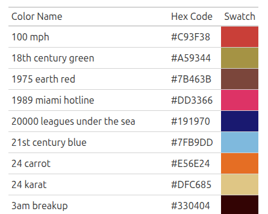

Overview
col2hex2col provides fast and simple functions to convert between color names and hexadecimal color codes. The package now supports an extensive database of over 32,000 color names, including all 657 R built-in colors plus the comprehensive color-names database.
The name is a playful reference to “2 Fast 2 Furious” - because color conversion should be both fun and fast!
Installation
Install the stable version from CRAN:
install.packages("col2hex2col")Or install the development version from GitHub:
# install.packages("devtools")
devtools::install_github("AnttiRask/col2hex2col")Usage
Convert color names to hex codes
library(col2hex2col)
# Single color
color_to_hex("red")
#> [1] "#FF0000"
# Multiple colors
color_to_hex(c("red", "blue", "green"))
#> [1] "#FF0000" "#0000FF" "#00FF00"
# Works with all 657 R color names
color_to_hex(c("skyblue", "coral", "chartreuse"))
#> [1] "#87CEEB" "#FF7F50" "#7FFF00"
# Also works with 32,000+ extended color names!
color_to_hex(c("sunset orange", "arctic ocean"))
#> [1] "#FD5E53" "#66C3D0"Convert hex codes to color names
# Single hex code
hex_to_color("#FF0000")
#> [1] "red"
# Multiple hex codes
hex_to_color(c("#FF0000", "#0000FF", "#00FF00"))
#> [1] "red" "blue" "green"
# Case insensitive
hex_to_color("#ff0000")
#> [1] "red"Nearest color fallback
When a hex code doesn’t have an exact match in the database, hex_to_color() automatically finds the nearest named color using LAB color distance. This requires the optional farver package.
# Hex code without exact match - finds nearest named color
hex_to_color("#859900")
#> [1] "bioshock"
#> Warning: Hex value(s) #859900 have no exact match; falling back using lab distance.
# Disable fallback to get NA for unmatched colors
hex_to_color("#859900", fallback_nearest_color = FALSE)
#> [1] NA
# Install farver for fallback support
install.packages("farver")Round-trip conversion
# Color -> Hex -> Color
colors <- c("red", "blue", "green")
hex_codes <- color_to_hex(colors)
hex_to_color(hex_codes)
#> [1] "red" "blue" "green"Explore and visualize the color database
# Get all 32,462 colors as a data frame
colors_df <- get_color_data()
head(colors_df)
#> name hex lab_l lab_a lab_b
#> 1 100 mph #C93F38 47.31632 54.067012 35.32651
#> 2 18th century green #A59344 61.03262 -3.367873 43.49787
#> 3 1975 earth red #7B463B 35.80671 21.453625 16.44115
#> 4 1989 miami hotline #DD3366 50.33896 66.911465 12.43714
#> 5 20000 leagues under the sea #191970 15.85760 31.715801 -49.57238
#> 6 21st century blue #7FB9DD 72.51353 -9.503429 -23.94186
# Note: LAB columns (lab_l, lab_a, lab_b) are included when the farver package is installed
# Find specific colors
blue_colors <- colors_df[grepl("blue", colors_df$name), ]
nrow(blue_colors)
#> [1] 1815
# Create a beautiful color swatch table (requires gt package)
create_color_table(head(colors_df, 9))
The create_color_table() function creates an interactive table with visual color swatches, making it easy to explore and select colors for your projects.
Features
- Extensive Database: 32,000+ color names including all R colors and the color-names database
-
Nearest Color Fallback: Automatically finds the closest named color when no exact match exists (requires optional
farverpackage) - Data Export: Access the complete color database as a data frame with optional LAB color coordinates for exploration and analysis
- Visual Tables: Create beautiful color swatch tables with the optional gt package
- Fast: Pre-built lookup tables for instant color conversion
- Simple: Intuitive functions to remember
- Backward Compatible: R colors are prioritized, ensuring existing code works unchanged
- Case Insensitive: “Red”, “red”, and “RED” all work the same
- Vectorized: Works with single values or vectors
- Validated: Comprehensive input validation and error messages
- Tested: Extensive test coverage with testthat
Why col2hex2col?
-
Minimal dependencies: Core functionality uses pure base R; optional packages (
farver,gt) enhance features - Extensive coverage: 32,000+ color names vs ~657 in base R
- Optimized performance: Pre-built lookup tables for instant conversion
- Backward compatible: R colors are prioritized, ensuring existing code works
- Well-documented: Complete function documentation and examples
Acknowledgments
- The
create_color_table()function was inspired by a question from Nehal Darakhshan on LinkedIn about visualizing color palettes. Thank you! - The extended color database (32,000+ colors) comes from David Aerne’s color-names project. Thank you for maintaining this excellent resource!
- The nearest color fallback functionality was contributed by Yann Cohen. Thank you for this great addition!
Code of Conduct
Please note that this project is released with a Contributor Code of Conduct. By contributing to this project, you agree to abide by its terms.